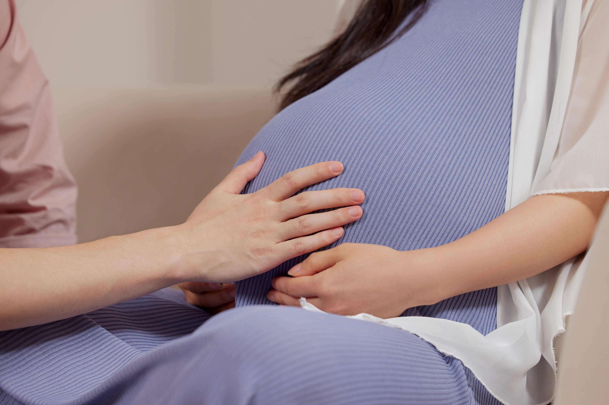
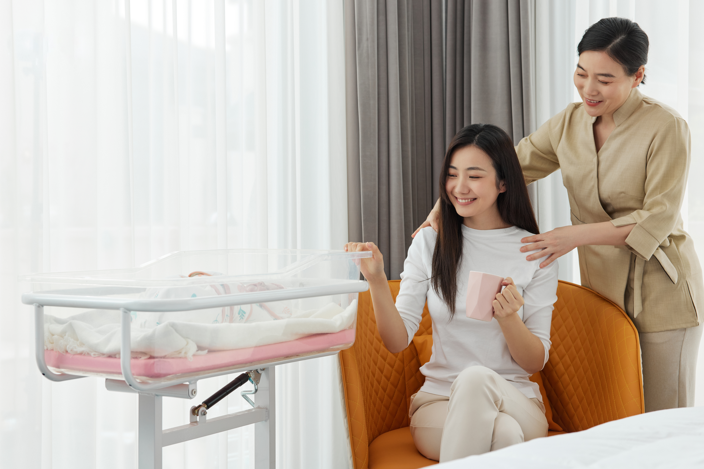
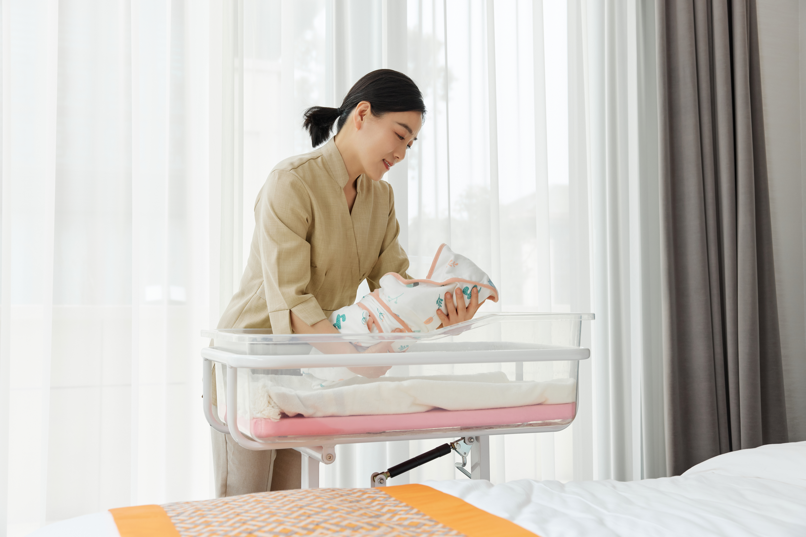

分龄制科学护理
基于国际婴幼儿发展理论，优护佳坚持「分龄制科学护理」：宝宝0-3月由母婴护理师护航生理适应期；宝宝4-12月由育婴师助力发育猛涨期；宝宝13-36月由育婴师+早教老师发展社会化进阶。每阶段由专属护理师进行专业照护，确保分龄服务精准契合婴幼儿成长关键期。

品牌介绍
优护佳（U CARE），新风天域集团体系易得康医疗旗下居家母婴护理品牌，和睦家医疗指定母婴护理合作机构。优护佳秉承「科学母婴护理」的品牌理念，坚持「循证医学」原则，开创业内知名的「专护师」培训体系，致力于为新生代家庭提供全周期、高品质的居家母婴护理新体验。
业务介绍
基于国际婴幼儿发展理论，优护佳坚持「分龄制科学护理」：宝宝0-3月由母婴护理师护航生理适应期；宝宝4-12月由育婴师助力发育猛涨期；宝宝13-36月由育婴师+早教老师发展社会化进阶。每阶段由专属护理师进行专业照护，确保分龄服务精准契合婴幼儿成长关键期。
优护佳联合和睦家医疗、玟胜国际共同研发课程，首创业内知名的「专护师」培训体系。国际先进理论基础与近100项实景操作训练，拒绝经验主义。入户前讲师礼仪+技能培训；上户中讲师线上陪同，每月岗中特训；下户后结合客户反馈，针对性培训，保证母婴护理服务品质。

优护佳服务团队由主管护师、注册营养师、双证护士、产康师、助产士、IBCLC泌乳顾问、早教专家、母婴护理师、质检督导9位服务人员共同组成，多对一贯穿孕-产-育全周期，形成了全方位、多层次、专业协同的母婴健康支持网络，让专业照护真正融入服务的每一个细节。
优护佳全力打造7大质控体系与3大服务评估系统，并采用“PDCA”循环管理模式。该模式从前期人员筛选到后期客户满意度环评，全程覆盖母婴健康需求，不仅能有效减少信息断层、避免执行偏差，还能动态调整以应对居家环境的复杂性，从而持续改进服务质量，不断提升护理体验。
